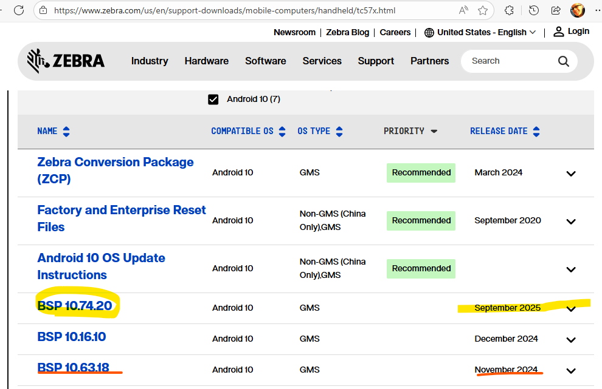

Scroll fling not working in Compose UI on TC57X
//Expert user has replied.
- Device: TC57X
- Android Version: 10
- Build Number: 10-63-18.00-QG-U00-STD-HEL-04
Symptoms
- When scrolling in Compose UI with touch, a fling (inertial scroll after flicking the finger) should occur, but it doesn’t. The scroll stops immediately.
- This issue does not occur with the legacy View System.
- Updating to Android 11 did not resolve the issue.
- On TC57, the problem does not occur; fling works as expected.
- Running a Google Play Store app built with Compose shows the same problem.
- When connecting the TC57X to a PC and scrolling with a remote mouse, the problem does not occur.
- Changing all the Touch Mode options under Display settings did not affect the symptom.
- I believe this is an issue with the touch driver.
- Are you aware of this issue? If so, do you plan to fix it?
- I would like to use Compose UI, but this scroll problem is discouraging.
I look forward to your response on this matter.
2 Replies
Hi Taeseob Shin
A newer A10 OS update has just been released. Try it, get it here
TC57x Touch Computer Support | Zebra
Your current OS version is 2 updates behind.

If the update does not fix your problem, my advice is:
Based on the symptoms, this looks more like a TC57X touch/input compatibility issue with Jetpack Compose than a problem with your Compose implementation. The fact that fling works on the TC57, works with a mouse on the TC57X, and also fails in an unrelated Google Play Compose app strongly suggests that the TC57X touch events may not be providing the expected velocity information to Compose. Since you have already tested Android 11 and all available Touch Mode settings without improvement, I would recommend reporting this to Zebra with the exact TC57X build, MX version, a minimal Compose test app, and comparison results from the TC57, specifically asking whether there is a known TC57X touch-event or velocity-reporting issue affecting Compose fling gestures and whether a newer OS/LifeGuard build contains a fix.